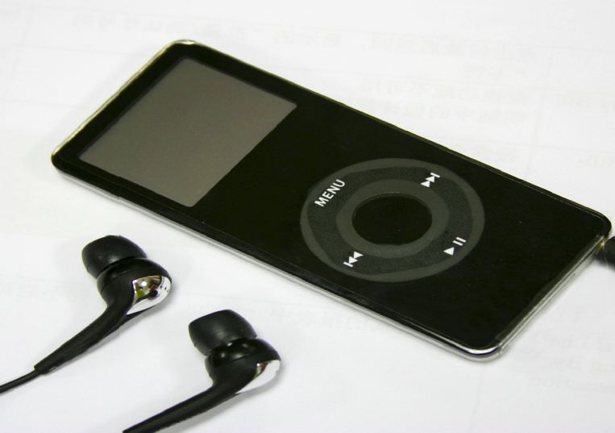

iDeaf
Noise-induced hearing loss and iPods®
Joseph LeRoy
Spring 2007

Stop what you’re doing right now! Can you hear the screeching of the AC
Transit’s brakes, the protest on Sproul or the voice of someone across
from you in Wheeler Hall? If not, take your iPod® earbuds out of your
ears. You may be suffering from noise induced hearing loss (NIHL). NIHL
is commonly caused by being exposed to very loud noises for either
prolonged or short periods of time, as through using an iPod®.
NIHL is unfortunately becoming just as ubiquitous as
iPods® themselves. Current sales of iPods® are at an estimated 40
million since their debut in 2001, of which 14 million were sold in the
fourth quarter last year. So if you are one of these 40 million people
who own an iPod®, you should understand key aspects of how it can
contribute to NIHL and protect yourself from hearing loss.
The increase in iPod® sales may be linked to the
increase in people who suffer from NIHL. According to a Newsday article
published in the summer of 2005, 12 percent of children and teenagers,
the target demographic for iPod® sales in the United States, suffer
from NIHL. Another study conducted by the American Speech Language
Hearing Association reported that the number of Americans age three and
older with some form of auditory disorder has more than doubled since
1971, from 13.2 million to about 30 million today. Of those 30 million,
one-third suffer from NIHL.
Loud sounds can injure both the eardrum and the tiny
hair cells within the inner ear that are the ultimate receptors for
auditory sensation. Once 25 to 30 percent of these hair cells become
damaged, you begin to experience hearing loss. Some signs of NIHL
include: difficulty hearing what people are saying, especially in
crowded rooms; needing a higher volume on the television; and not being
able to hear high pitched sounds. Tinnitus, a continuous ringing,
whistling, or clicking sound in the ears may also be a sign of NIHL.
So why do iPods® cause NIHL? Sound is measured in
decibels, a measure of the amplitude a sound wave produces. An iPod® is
capable of producing 100 to 120 decibels, the equivalent of a jet plane
takeoff. A vacuum cleaner, an alarm clock, and a dishwasher only
produce between 70 to 80 decibels, which can still contribute to NIHL.
To fix this problem, some governments have stepped
in to pass laws regulating the decibel levels available on an iPod®. In
particular, the French government required Apple Computers, Inc. to
upload software onto them that would limit their output volume to 100
decibels. However, no such regulations currently exist in the United
States.
Further complicating the issue, it is very difficult
to determine what decibel level an iPod® is set to. Susan Ivey, MD,
associate professor at the University of California, Berkeley School of
Public Health, says, “If I were an auditory specialist and a patient
came to me concerned about his or her hearing in relation to iPod®s, it
would be a difficult issue to address. Since there is no digital
reading or marker on the turn-wheel to indicate the decibel level, it
would be hard to indicate a safe level of listening. A safe level to
listen would be around 60 decibels or that of a conversation, but how
to literally point that out on an iPod® would not be easy.”
Additionally, iPods® have immense battery longevity
and song capacity. As some iPods® offer up to 80 gigabytes of storage
space and are powered by batteries that last 20 hours, exposure to loud
sounds is tremendously increased compared to that engendered by older
technologies, such as the Walkman®.
Finally, iPod® earbuds, which come pre-packaged with
the product, cause the most damage. These tiny earphones fit snuggly
right into the ear canal, and herein lies the problem. Prior to the
development of earbuds, music lovers used headphones. The older
headphones diluted noise, albeit unintentionally, because the sound
waves they produced could be channeled outside of the ear canal. Now
with the advent of earbuds, the emitted waves are focused into the ear
canal, greatly amplifying the effective amplitude of the sounds.
What can be done? Surgical developments are likely
to be too expensive, as are noise-attenuating headphones; two
companies, Etymotic Research Inc. and Bose produce such products
costing $149 and $299, respectively. Unfortunately, outside of the
basic guidelines of not exceeding 60 percent of the iPod®’s maximum
volume, there may be no solution other than restricting iPod® usage.
So next time you put those earbuds in your ears,
crank up the volume on your iDeaf and jam to some tunes—be
conscientious of your hearing!
About the Author
Joseph LeRoy is a fourth year Legal Studies and English major who wishes to bring light to what might not be widely known.